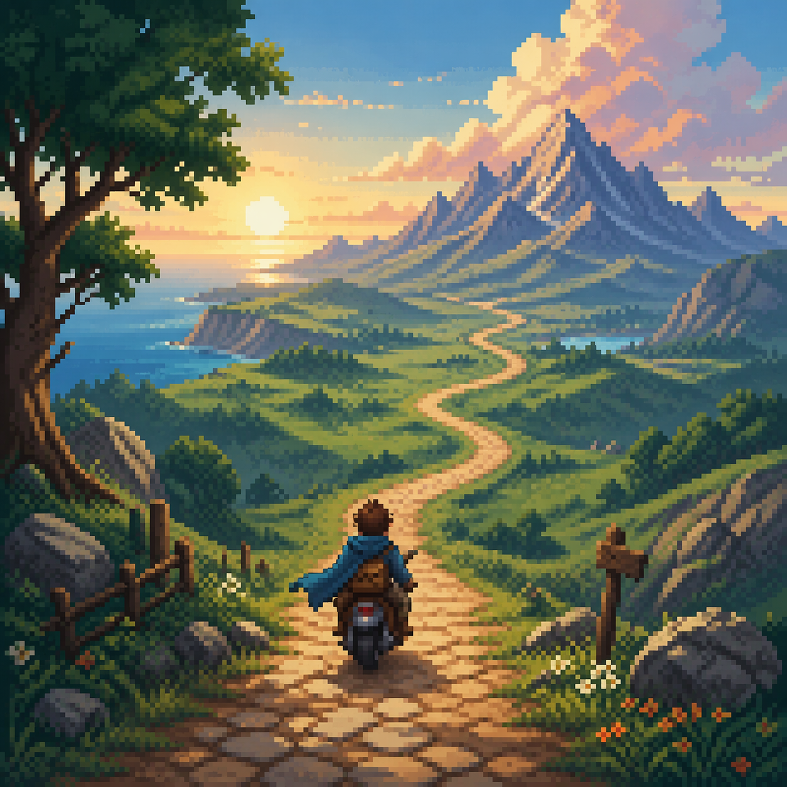

Фритрек и нулевой спринт: Подготовка к работе
</HTML>

Это было самое начало пути. На этом этапе важно было проникнуться основами и настроиться на учёбу. И, возможно, подумать, как новые знания могут повлиять на ваше будущее.
Появлялось ощущение движения вперёд: шаг за шагом, от простого к сложному. Хотелось разобраться, попробовать и увидеть, к чему в итоге приведёт этот путь.